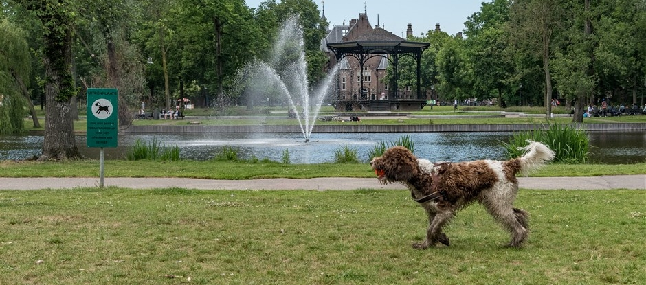

Oosterpark
Het Oosterpark is een stadspark en straat in de Oosterparkbuurt in Amsterdam-Oost. Het park is circa 12 hectare groot. Het in 1891 aangelegde Oosterpark was het eerste grote park dat door de gemeente Amsterdam werd aangelegd
Foto van Oostepark
Oosterpark op google maps
De plekken die zijn aangegeven met de sterretjes zijn de beacons!